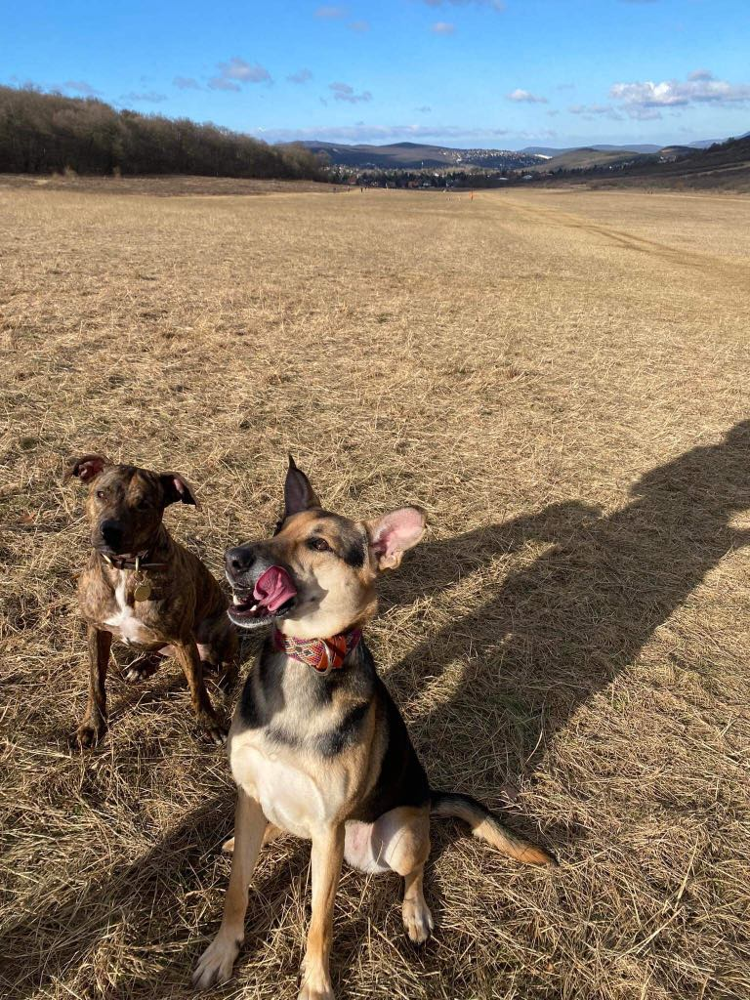
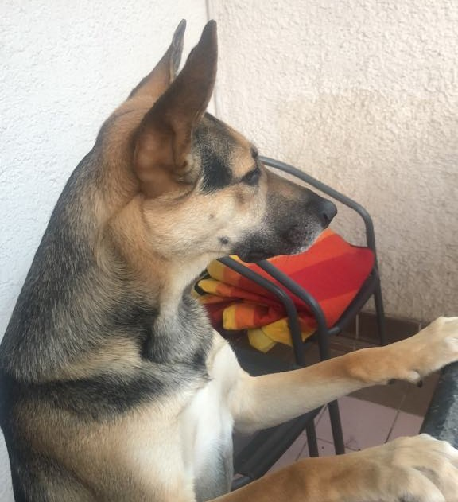
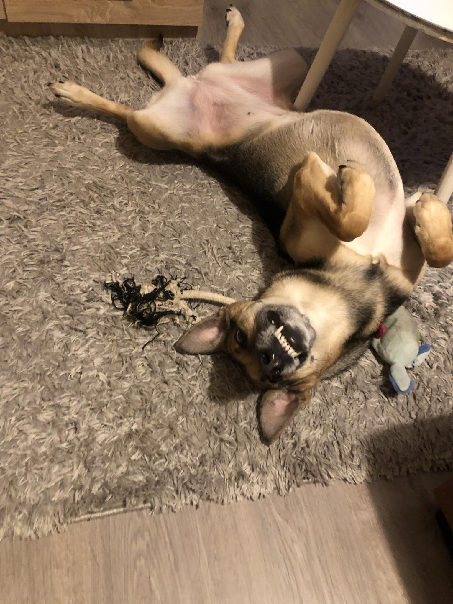

Bambi
Sziasztok! A nevem Bambi. A gazdijaim azt mondták, hogy valamilyen
juhász
és agár
fajta keveréke vagyok. Én ezeket a dolgokat nem tudhatom, de azt viszont igen, hogy nagyon szeretek a gazdikkal futni, a pajtijaimmal birkózni és finom falatokat kapni.
Vidáman
Érdeklődően

Éberen

Játék közben

Amit nagyon szeretek csinálni:
Játszani
Futni
Labdázni
Rágcsálni
Már-már beszélve ugatni